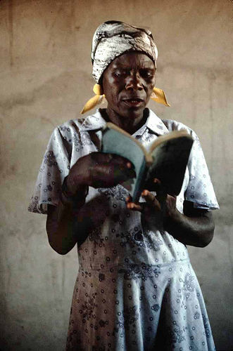

Map |
Characters |
Culture |
Grammar |
Glossary |
Links |
Authors |
|---|
 |
Education in ZimbabweIn her introduction, Chipo tells us that she is in Grade 1 and talks about her school, Gweshe Primary School. Zimbabwe's education system is based on the British system, with 7 years of primary and 6 years of secondary schooling. Classes in primary school are referred to as “grades” (giredhi in Shona) and in secondary school as “forms” (fomu in Shona). Most Zimbabwean children begin Grade 1 when they are six years old, like Chipo. In rural schools like Gweshe Primary, students begin learning in Shona, but transition to all reading and writing in English by Grade 3. In urban areas the medium of instruction is English, with Shona or Ndebele taught only as a subject. After seven years of primary schooling Chipo will sit for four nationally-set Grade 7 examinations in Mathematics, English, Shona or Ndebele, and Content (a combination of sciences and social sciences). |
If Chipo goes on to Form 1, when she is 12 or 13 years old, she can attend a government, private, mission day, or mission boarding school. Government schools take students by zone and then allot the rest of the places to those with the best scores on their Grade 7 examinations. Private, mission day and boarding schools admit students based on their Grade 7 examination results, interviews, and school-based placement tests. If Chipo doesn’t pass the Grade 7 examinations she will not go on to secondary school. Secondary School consists of three levels: ZJC (Zimbabwe Junior Certificate) which includes Forms 1 and 2; O level (Ordinary level) which includes Forms 3 and 4; and A level (Advanced level) which includes Lower 6th Form and Upper 6th Form.. In Forms 1 and 2 Chipo will study English, Shona or Ndebele, Mathematics, Science, History, Geography, Bible Knowledge, and a practical subject (e.g. Food and Nutrition, Fashion and Fabrics, Woodwork, Agriculture, Metalwork, or Technical Drawing). Based on her Form 1 and 2 reports, Chipo will be assigned to courses and tracked classes for her O level studies for Forms 3 and 4. In government schools in a rural area like Gweshe, Chipo will be restricted in their options and usually are only afforded the opportunity to take 8 or 9 subjects. Private schools often let students take up to 12 or 13 subjects for O level exams. Subjects offered for O level exams include: Biology, Chemistry, Physics, Physics with Chemistry, Integrated Science, Mathematics; English Literature, Religious Education, Geography, History, Accounts, Commerce, Economics, Computer Studies, English, Shona, Ndebele, French, German, Latin, Art, Music, Woodwork, Metalwork, Agriculture, Technical Drawing, Fashion & Fabrics, and Food & Nutrition Chipo will write her O level exams when she is about 15-17 years old. To receive a passing O level certificate, she must pass at least five subjects including English language with a mark of C or better. The English and mathematics O level exams serve as gatekeepers; Chipo won’t be able to proceed without them regardless of her other exam scores, and thus would not continue into the last two years (A levels) of secondary school. Most O level students return to small-scale farming, enter the work force, or proceed to a vocational course, a technical school, or a nursing or teaching college. Only those with the best scores are admitted to an A level program. If she does well enough on O levels to proceed to the A level, Chipo will choose among science, commercial and art subjects to study for Lower 6th Form and Upper 6th Form. Most students take three subjects, with a few students at elite schools opting for four subjects. A level subjects currently offered include: English Literature, Geography, Shona or Ndebele Language and Literature, Divinity, History, French, Art, Music, Latin, German, Management of Business/Business Studies, Economics, Accounts, Computer Science, Technical Graphics, Biology, Chemistry, Physics, Mathematics, and Further Mathematics. If Chipo does well on her A level exams, she may be accepted to the University of Zimbabwe and her course of study will be dictated by which subjects she passed. Works ConsultedEmbassy of the United States. “Zimbabwe's Educational System: A solid foundation for Higher Education.” http://harare.usembassy.gov/zimbabwe_educational_profile.html 1 August 2006. |
|